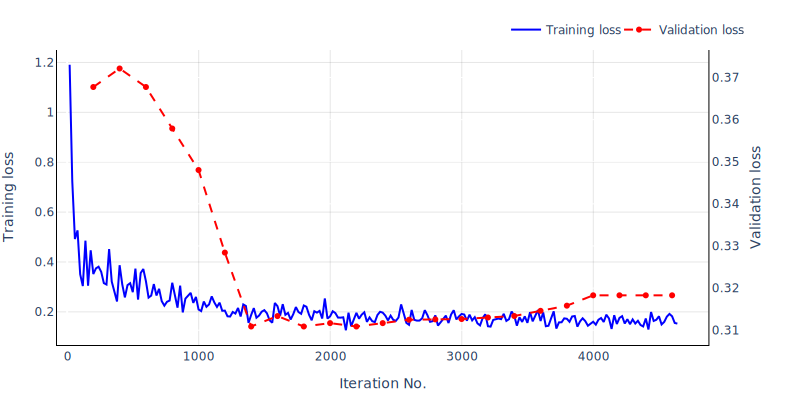

Object Detection Framework ¶
Alessandro Cerioni, Etat de Geneve - Clémence Herny, Exolabs - Adrian F. Meyer, FHNW - Gwenaëlle Salamin, Exolabs
Published on November 22, 2021 - Updated on December 12, 2023
This work by STDL is licensed under CC BY-SA 4.0


Abstract: The STDL develops a framework allowing users to train and use deep learning models to detect objects from aerial images. While relying on a general purpose third-party open source library, the STDL's framework implements an opinionated workflow, targeting georeferenced aerial images and labels. After a brief introduction to object detection, this article provides detailed information about this framework. References to successful applications are provided along with concluding remarks.
Introduction¶
Object detection is a computer vision task which aims at detecting instances of objects of some target classes (e.g. buildings, swimming pools, solar panels, ...) in digital images and videos.
According to the commonly adopted terminology, a distinction is made between the following tasks:
- object detection, in which the goal is to determine the rectangular "bounding box" surrounding each detected object;
- instance segmentation, in which one aims at finding the precise contour of each detected object.
This distinction is well illustrated by the bottom half of the following image:

Object Detection vs Instance Segmentation. Image credit: Waleed Abdulla.
Significant progress has been made over the past decades in the domain of object detection and instance segmentation (see e.g. this review paper). Applications of object detection methods are today popular also in consumer products: for instance, some cars are already capable of detecting and reading speed limit signs; social media applications integrate photo and video effects based on face and pose detection. All these applications usually rely on deep learning methods, which are the subset of machine learning methods leveraging deep neural networks. While referring the reader to other sources for further information on these methods (see e.g. these lecture notes), we wish to highlight a key point in all these learning-based approaches: no rigid, static, human-engineered rule is given to the machine to accomplish the task. Instead, the machine is provided with a collection of input-output pairs, where the output represents the outcome of a properly solved task. As far as object detection is concerned, we provide deep learning algorithms with a set of images accompanied by reference annotations ("ground truth labels"), which the machine is expected to reproduce. Things become particularly interesting when the machine learns how to generate acceptable detections/segmentation on previously unseen images; such a crucial ability is referred to as "generalization".
A generic framework is being developed within the STDL, allowing the usage of state-of-the-art machine learning methods to detect objects from aerial images. Among other possible applications, such framework allows one to leverage aerial images to provide valuable hints towards the update of cadastral information.
At its core, the STDL's object detection framework is powered by Detectron2, a Python library developed by the Facebook Artificial Intelligence Research group and released under the Apache 2.0 open-source license. Detectron2 features built-in methods to train models performing various tasks, object detection and instance segmentation to name a few. Our framework includes pre- and post-processing scripts allowing to use Detectron2 with georeferenced images and labels.
The workflow goes through the steps described here-below.
Workflow¶
1. Tileset generation¶
Typically, aerial coverages are made accessible through web services, publicly or privately. While making opaque to the user the server-side tiling and file-based structure, these web services can efficiently generate raster images on-demand depending on the parameters sent by the requesting client. These parameters include:
- the bounding box of the requested area;
- the image width and height (in pixels);
- the reference system of both the bounding box (input) and the requested image (output).
GIS tools such as QGIS and ArcGIS Pro as well as Web Applications powered by Web Mapping clients such as Leaflet, OpenLayers, MapLibre GL, etc. actually rely on this mechanism to let end users navigating through tons of bits in quite a seamless, fluent, reactive way. As a matter of fact, zooming in and out in such 2D scenes amounts to fetching and visualizing different images depending on the zoom level, instead of "simply" increasing/decreasing the size of the various image pixels as displayed on screen.
Through this 1st step, several requests are issued against a web service in order to generate a consistent set of tiled images ("tileset") covering the area of interest (AoI), namely the area over which the user intends to train a detection model and/or to perform the actual object detection. Connectors for the following web services have been developed so far:
- OGC's Web Mapping Service (WMS);
- ESRI's Map Image Layer;
- XYZ tile services.
Except when using the XYZ connector, our framework is agnostic with respect to the tiling scheme. The user has to just provide an input file compliant with some requirements. We refer the user to the code documentation for detailed information.
Concerning the AoI and its extension, the following scenarios are supported:
- training-only scenarios, i.e. the user intends to train a model to be used for detection at a later stage. In this case, the AoI would only cover the area for which reference, ground truth data exist.
- Detection-only (or "inference-only") scenarios, in which the user wishes to carry out object detection leveraging a previously trained model. In this case, the AoI would cover areas for which no reference data is available.
- Training AND detection scenarios, namely the composition of tasks 1 and 2.
In the case of scenarios no. 1 and 3, ground truth labels are necessary. Provided by the user as polygons in some geographic coordinate system, these polygons are then mapped onto each image coordinate system - the latter ranging from (0, 0) to (<image width in pixels> - 1, <image height in pixels> - 1) - in order to generate ground truth segmented images. Such a mapping is achieved by applying an affine transformation and encoded using the COCO format, which is natively supported by Detectron2. Labels can optionally be provided in the case of inference-only scenarios as well, should the user be willing to check non-ground truth labels against detections and vice versa.
As mentioned above, machine learning models are valuable as far as they do not "overfit" to the training data; in other words, as far as they generalize well to new, unseen data. One of the techniques which are commonly used in order to prevent machine learning algorithms from overfitting is the "train, validation, test split". While referring the interested reader to this Wikipedia page for further details, let us note that a 70%-15%-15% split is currently hard-coded in our framework.
Various independent COCO tilesets are generated, depending on the scenario:
-
in training-only scenarios, three COCO tilesets are generated:
- training tileset, abbreviated as
trn; - validation tileset (
val); - test tileset (
tst).
For the time being, training, validation and test tiles are chosen exclusively among the tiles within the AoI which include one or more ground truth labels.
- training tileset, abbreviated as
-
In inference-only scenarios, a single COCO tileset labeled as "other" is generated (
oth). -
In training AND inference scenarios, the full collection of tilesets is generated:
trn,val,tst,oth.
2. Model training¶
The 1st step provides a collection of tiled images, sharing the same size and resolution, plus the corresponding COCO files (trn + val + tst and/or oth depending on the scenario).
The 2nd step performs the actual training of a predictive model, iterating over the training dataset. As already mentioned, we delegate this crucial part of the process to the Detectron2 library; support for other libraries may be implemented in the future, if suitable. Detectron2 comes with a large collection of pre-trained models tailored for various tasks. In particular, as far as instance segmentation is concerned, pre-trained models can be selected from this list.
In our workflow, we setup Detectron2 in such a way that inference is made on the validation dataset every N training iterations, N being an user-defined parameter. By doing this, we can monitor both the training and validation losses all along the iterative learning and decide when to stop. Typically, learning is stopped when the validation loss reaches a minimum (see e.g. this article for further information on early stopping). As training and validation loss curves are somewhat noisy, these curves can be smoothed on the fly in order to reveal steady trends. Other metrics may be tracked and used to decide when to stop. For now, within our framework (early) stopping can be done manually and is left to the user; it will be made automatic in the future, following some suitable criterion.

Training and validation losses in a sample object detection task. In this case, one could stop the training after the first ~1400 iterations. Note that, in this example, the validation loss is evaluated every 200 iterations.
Let us note that the learning process is regulated by several parameters, which are usually called "hyperparameters" in order to distinguish them from the learned "parameters", the latter being - in our deep learning context - the coefficients of the many neurons populating the various layers of the deep neural network. In successful scenarios, the iterative learning process does actually lower the validation loss until a minimum value is reached. Yet, such a minimum is likely to be a "local" one (i.e. relative to a given set of hyperparameters); indeed, the global minimum may be found along a different trajectory, corresponding to a different set of hyperparameters. Actually, even finding the global minimum of the validation loss could be not as relevant as checking how different models compare with each other on the common ground of more meaningful "business metrics". Our code does not implement any automatic hyper-parameter tuning, it just outputs business metrics, as explained here-below.
3. Detection¶
The model trained at the preceding step can be used to perform the actual object detection or instance segmentation over the various tilesets concerned by a given study:
- in training-only scenarios, detections can be made on the training, validation and test sets, for model assessment purposes (cf. next section);
- in inference-only scenarios, detections can be made over the tileset which we call "other", for now.
Depending on the configuration, Detectron2 can perform either object detection and instance segmentation at once, or object detection only. In both cases, every detection is accompanied by the following information:
- the class the detected object belongs to;
- a confidence score, ranging from 0 to 1.
In the case of object detection only, a bounding box is output as a list of vertices relative to the image coordinate system. In the case of instance segmentation, detections are also output as binary masks, one per input tile/image, in which pixels belonging to target objects are encoded with ones whereas background pixels are encoded with zeros. Our code can then generate a vector layer out of these binary masks. Optionally, polygons can be simplified using the Ramer-Douglas-Peucker algorithm (RDP).
4. Assessment¶
Results are assessed by matching detections against ground truth labels. For a detection and a ground truth label to be matched with each other, the intersection over union (IoU) between the two polygons must be greater than a user-defined threshold (default value = 0.25). Let us remind that the intersection over union is defined as follows:
If multiple detections and ground truth labels intersect, the detection which exhibits the largest IoU is tagged as true positive, the other detections as false positives.
Detections are then tagged according to the following criteria:
- true positive (TP): detections matching correctly a ground truth object;
- false positive (FP): detections not matching any ground truth object;
- false negative (FN): missing detections, namely ground truth objects which are not detected;
- wrong class: detections matching a ground truth object belonging to another class.
The reader may wonder why there are no true negatives (TN) in the list. Actually, all the pixels which are not associated with any target class can be considered as "true negatives". Yet, as far as object detection and instance segmentation are concerned, we do not need to group leftover pixels into "dummy objects". Should the user need to model such a scenario, one idea might consist in introducing a dummy class (e.g. "background" or "other").
Metrics are calculated on a class-by-class basis, in order to take into account possible imbalances between classes. Detections in the wrong class are classified as FN, i.e. missed object, or false positive (FP), i.e. detections not matching any object, depending on the target class we are making the computation for.
Precision and recall by class are used here:
- \(\mbox{precision}_{class} = \frac{\mbox{TP}_{class}}{\mbox{TP}_{class} + \mbox{FP}_{class}}\)
- \(\mbox{recall}_{class} = \frac{\mbox{TP}_{class}}{\mbox{TP}_{class} + \mbox{FN}_{class}}\)
While referring the reader to this page for further information on these metrics, let us note that:
- Precision is optimal when it equals one, i.e. when the count of FPs is equal to zero. This metric measures how good the model is in detecting only objects with the class of interest;
- Recall is optimal when it equals one, i.e. when the count of FNs is equal to zero. This metric measures how good the model is in detecting all objects of the class of interest without missing any.
Each metric can be aggregated to keep only one value per dataset, rather than one per class.
- \(\mbox{precision} = \frac{\sum_{class}\mbox{precision}_{class}}{\mbox{nbr of classes}}\)
- \(\mbox{recall} = \frac{\sum_{class}\mbox{recall}_{class}}{\mbox{nbr of classes}}\)
As already mentioned, each detection is assigned a confidence score, ranging from 0 to 1. By filtering out all the detections exhibiting a score smaller than some cut-off/threshold value, one would end up having more or less detections to compare against ground truth data; the higher the threshold, the smaller the number of detections, the better their quality in terms of the confidence score. By sampling the threshold from a minimum user-defined value to a maximum value (e.g. 0.95) and counting TPs, FPs, FNs at each sampling step, meaningful curves are obtained representing counts and metrics like precision and recall as a function of the threshold. Typically, precision (recall) is monotonically increasing (decreasing) as a function of the threshold. As such, neither the precision nor the recall can be used to determine the optimal value of the threshold, which is why precision and recall are customarily aggregated in order to form a third metric which can be convex if computed as a function of the threshold or, at least, can exhibit local minima. This metric is named "\(F_1\) score" and is defined as follows:
- \(F_1 = 2\times \frac{\mbox{precision}\;\times\;\mbox{recall}}{\mbox{precision}\; +\; \mbox{recall}}\)
Different models can then be compared with each other in terms of \(F_1\) scores; the best model can be selected as the one exhibiting the maximum \(F_1\) over the validation dataset. At last, the test dataset can be used to assess the selected model and provide the end user with an objective measure of its reliability.
Other approaches exist, allowing one to summarize metrics and eventually come up with threshold-independent scores. One of these approaches consist in computing the "Area Under the ROC curve" (AUC, cf. this page).
5. Iterate until results are satisfactory¶
Several training sessions can be executed, using different values of the various hyperparameters involved in the process. As a matter of fact, reviewing and improving ground truth data is also part of the hyper-parameter tuning (cf. "From Model-centric to Data-centric Artificial Intelligence''). Keeping track of the above-mentioned metrics across multiple realizations, eventually an optimal model should be found (at least, a local optimum).
The exploration of the hyper-parameter space is a tedious task, which consumes time as well as human and computing resources. It can be performed in a more or less systematic/heuristic way, depending on the experience of the operator as well as on the features offered by the code. Typically, a partial exploration is enough to obtain acceptable results. Within the STDL team, it is customary to first perform some iterations until "decent scores" are obtained, then to involve beneficiaries and domain experts in the continuous evaluation and improvement of results, until satisfactory results are obtained. These exchanges between data scientists and domain experts are also key to raise both communities' awareness of the virtues and flaws of machine learning approaches.
Use cases¶
Here is a list of the successful applications of the framework described in this article:
- Automatic detection of quarries
- Classification of road surfaces
- Swimming Pool Detection for the Canton of Geneva
- Swimming Pool Detection for the Canton of Thurgau
- Updating the «Cultivable Area» Layer of the Agricultural Office, Canton of Thurgau
Concluding remarks¶
The STDL's object detection framework is still under development and receives updates as new use cases emerge. The source code can be found here.